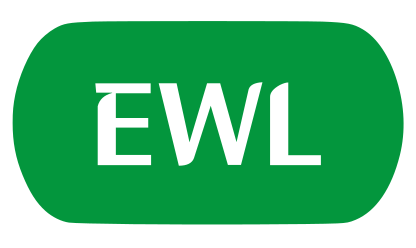

RailBuddy
Home
History
Timings
Menu
Line Status
North-South Line

East-West Line
North East Line
Circle Line
Downtown Line
Thomson-East Coast Line
Bukit Panjang LRT
Sengkang LRT
Punggol LRT
Step 1 of 4
Check Line Status
The home screen shows real-time operational status for all
MRT and LRT lines
at a glance. Tap any line for full line and diagrams.
Step 2 of 4
Incident History
The
History
tab stores a timeline of past incidents and disruptions across the MRT and LRT network, complete with timestamps and details.
Perfect for checking if that morning delay has been resolved or reviewing the timeline of a major disruption.
Step 3 of 4
First & Last Trains
Use the
Timings
tab to look up first and last train times for any station on any MRT or LRT line.
Great for planning early morning commutes or making sure you catch the last train home.
Step 4 of 4
Customise Settings
Head to
Menu > Settings
to switch between light, dark, or system-matched themes to suit your preference.
Choose
System
to have RailBuddy automatically follow your device's display setting - no manual switching needed.
Back
Skip
Next